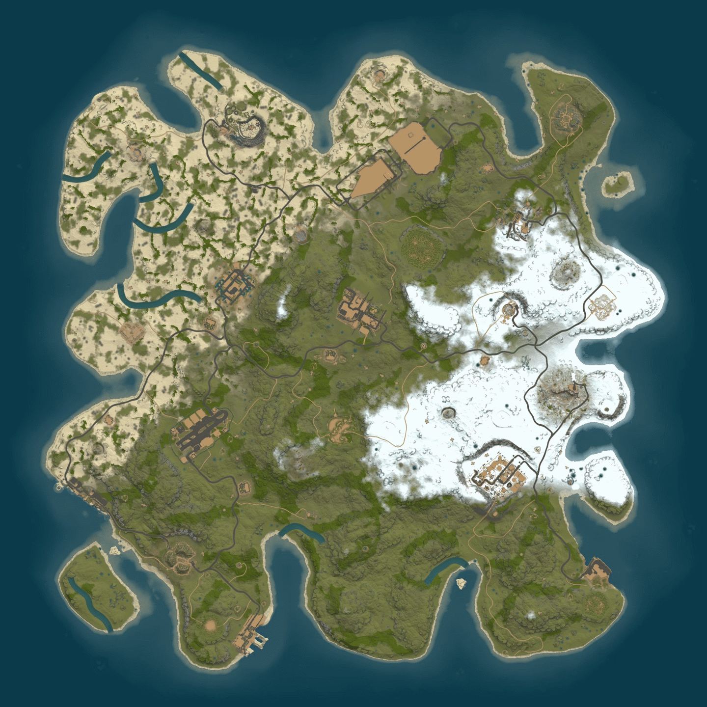

<div ng-controller="MapController" id="MapController">
    <div class="col-lg-12">
        <div class="alert alert-warning" ng-show="!arePluginsInstalled()">
            <p class="text-center">Please install RustMapAPI & ImgurApi to use the World Map!</p>
        </div>
    </div>
    <div> <!-- THIS GOES HERE: ng-if="arePluginsInstalled() -->
    </div>
    

    <div class="MAKEUC-info">MAKEUC: This page is a proof of concept.</div>
</div>